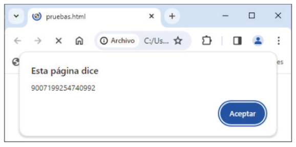
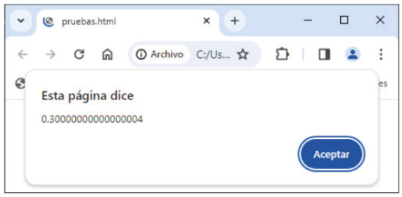
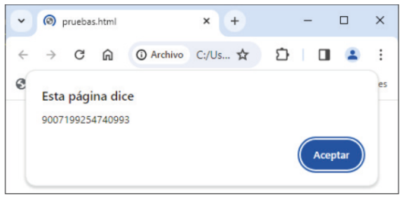
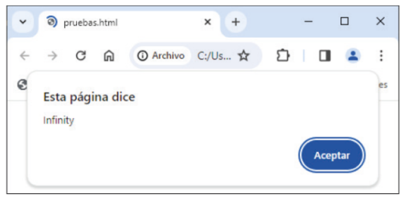
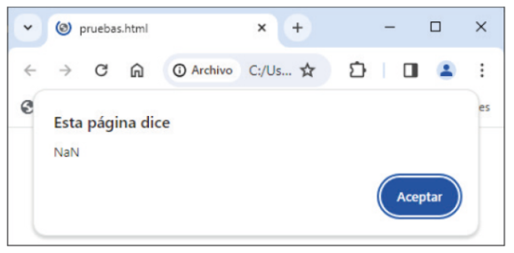

Capítulo 4 - Tipos de datos primitivos
JavaScript se caracteriza por ofrecer la posibilidd de que la asignación de valores a una variable no tenga por que ser sí o sí tras finalizar su declaración como existen en otros lenguajes. A esto se lo conoce como tipado dinámico.
Si nos adentramos más en lo que son los valores y sus tipos veremos que exiten dos clases o tipos, los datos primitivos, los más básicos y simples, y los datos compuestos, qué, simplemente son conjuntos o agrupaciones de datos primitivos.
Estos son algunos de los datos primitivos más comunes y con los que trabajaremos a lo largo de la unidad:
Boolean, en español buleanos. Abarcan únicamente dos valores, "true" y "false".
Number, en español numero. Constituye tanto números enteros como números decimales.
BigInt. Son números enteros de un valor o tamaño mayor que el de los datos "Numeber".
String. Son cadenas de texto. Su declaración podrá realizarse bajo el uso de comillas o comillas simples.
Null. Representa un valor nulo o en blanco. Su declaración se dará bajo la palabra reservada "null"..
Undefined. Representa un valor vacío. Se declara mediante el uso de la palabra reservada "undefined". Si volvemos atrás, al capítulo anterior, por ejemplo, veremos como en las imégenes de los ejemplos anteriores apreciamos el valor "undefined".
Si yas los conoces o has trabajado con ellos puede saltarse esta parte o hacer un recordatorio:
Boolean: trabaja con dos posibles valores, "true" y "false". Se utiliza para ejecutar un bloque de código u otro en sentencias condicionales "if", else, "else if", then o switch.
Number: Este es un tipo de dato bastante especial, pues a diferencia de JavaScript, otros lenguajes de programación no lo utilizan. "Number" es capaz de englobar/agrupar y almacenar todos los valores numéricos como si fuesen lo mismo. Representa a entreos con signo o sin signo, números decimales de simple o doble precisión, etc.
Esto es muy importante de comprender, pues JavaScript tenderá a trabajar con una precisión del 100% siempre y cuando se trabaje entre los números comprendidos entre -(2^53 -1) y (2^53 -1), es decir, entre el -9007199254740991 y el 9007199254740991. Una vez suerada esta cantidad, el lenguaje empezará a fallar dando aproximados que no corresponen a la operación real, sino a un aproximado a la posición de almadenamiento de la memoria del ordenador.
Ejemplo práctico 1 (número muy grande):
alert(9007199254740993);

Ejemplo práctico 2 (número muy pequeño):
alert(0.1 + 0.2);

BigInt: Es otro tipo de dato numérico, qué, siguiendo con la explicaciín del almacenamiento y el tamaño del tipo anterior, "BigInt" ayuda a superar ese límite. Para hacer uso o referencia de este tipo de datos, sólo bastaría con añadir el carácter "n" al final de la secuencia numérica.
"BigInt"posee dos valores simbólicos para representar el infinito "-Infinity" y "+Infinity". Siendo las soluciones matemáticas a indeterminaciones o números muy muy grandes.
Ejemplo práctico (número muy grande con la letraexpresión "n"):
alert(9007199254740993n);

Ejemplo práctico (número de indeterminación):
alert(1/0);

También cabe hacer mención a otro tipo de dato, el Nan, acrónimo de Not A Number. La aparición de este tipo de datos tendrá lugar al realizar operaciones aritméticas que no pudieran llevarse a cabo. Por ejemplo:
Ejemplo práctico (operación aritmética ilógica/imposible):
alert("Naranja" / 2);

String: Se emplea para el manejo de cadenas de texto. Se puden declarar mediante el uso de comillas o comillas simples. Es importante mencionar que dentro de estas cadenas de texto se permite el uso de las comillas opuestas dentro de su cadena, es decir, puedes declarar una cadena con comillas y después utilizar las comillas simples en su interior.
Ejemplo práctico (declaración de cadenas de texto):
alert("¡Hola mundo!");
alert('¡Hola mundo!');
Ejemplo práctico (declaración de cadenas de texto con comillas opuestas):
alert("¡Hola 'mundo'!");
alert('¡Hola "mundo"!');
Detro de estas cadenas de texto también existen sentencias especiales conocidas como secuencias de escape. Estas tendrán una función u otra:
Ejemplo práctico (secuencias de escape):
● \b - Retroceso
alert("¡Hola\b mundo!");
mostrará "¡Hol mundo!"
● \n - Salto de línea
alert("¡Hola\n mundo!");
mostrará "¡Hola
mundo!"
No obstante, la forma correcta de dividir una cadena en varias líneas sería añadiendo
una última barra invertida:
alert("¡Hola\n\ mundo!");
mostrará "¡Hola
mundo!"
Aunque pueda parecer lo mismo, lo que estamos hanciendo es indicarle al navegador que
la cadena de texto continúa en la línea siguiente.
● \r - Retorno de carro
alert("¡Hola\r mundo!");
mostrará " mundo!"
● \t - Tabulación
alert("¡Hola\t mundo!");
mostrará "¡Hola mundo!"
No obtante, habrá ocasiones donde se precisará del uso de caracteres especiales como por ejemplo (""), ( () ), etc. Para ello deberemos de usar la barra invertida ( \ ), como por ejemplo:
Ejemplo erróneo:
alert("El libro que más me gusta es "JavaScript como nunca antes se lo habían contado""")
Ejemplo práctico (uso de la barra invertida):
alert("El libro que más me gusta es \"JavaScript como nunca antes se lo habían contado\"")
Null y Undefined: Estos tipos de datos únicamente tienen un valor, "null" y "undefined" respectivamente. Aunque ambos puedan parecer que representan lo mismo, en realidad son diferentes, pues el primero representa valores nulos, en blanco o irrelevantes, mientras que el segundo refiere a una variable a la que todavía no se le ha asignado un valor. Entendiendo así que Null es un valor que representa un espacio vacío, mientras que Undefined representa a una variable vacía, pues todavía no ha sido definidida con algun valor.
Ejemplo práctico (uso de "null"):
let Saludo = null; // Variable con un valor vacío intencional.
alert(Saludo);
Ejemplo práctico (uso de "undefined"):
let Saludo; // Variable sin valor asignado.
alert(Saludo);
Como hemos visto y mencioné anterior, JavaScript es un lenguaje muy permisible, por lo que sideclaramos operandos de distinto tipo al operador, éste los convertirá automáticamente. No obstante es bastante recomendable forzar de form explícita la declración del tipo a trabajar.
Number(). Convierte cualquier tipo de dato primitivo a número.
Ejemplo práctico (uso de "Number()"):
Number = "14"; mostrará el valor "14".
Number = " 14 "; mostrará el valor "14".
En caso de que no se mostrase el valor, este valor pasará a mostrarse como "Nan".
Number = "Hola"; mostrará "Nan".
Por el contrario, si el valor de la variable no existe, esta vacía, o sólo tiene
espacops en blanco.
Number = ""; mostrará "0".
Number = " "; mostrará "0".
De igual forma, dntro de los datos de tipo "Number" existe la posibilidad de realizar
operaciones aritméticas entre cadenas, a excepción de la suma:
Number("14") * Number("7") mostrará el valor "98".
Number("14") - Number("7) mostrará el valor "7".
Number("14") / Number("7) mostrará el valor "2".
Si usases el símbolo de suma (+)
Number("14") + Number("7") mostrará el valor "147".
Además de la función "Number", también se ofrecen las funciones "parseInt" (cadena,
base), "parseFloat" (cadena, base).
● "parseInt" Convierte una cadena en un número entero.
parseInt("00000101", 2) mostrará el valor "5".
parseInt("Hola 14") mostrará el valoe "NaN". // Siempre devolverá "NaN"
cuando la cadena no comience con un número.
parseInt("14 Hola") mostrará el valoe "14".
parseInt("14.7") mostrará el valoe "14".
● "parseFloat" Convierte una cadena en un número de coma flotante (entero o
decimal con signo) Funcionará igual que "parseInt" pero permitiendo valores
decimales.
parseFloat("14.7") mostrará el valor "14.7".
De igual forma, los valores booleanos, "true" y "false". Así como los vacíos pueden
convertirse en números.
Number(true) mostrará el valor "1".
Number(false) mostrará el valor "0".
Number(null) mostrará el valor "0".
Number(undefined) mostrará el valor "NaN".
parseInt(). Convierte cualquier tipo de dato primitivo a número entero.
BigInt(). Convierte cualquier tipo de dato primitivo a número entero.
String(). Convierte cualquier tipo de dato primitivo a cadena de texto.
Ejemplo práctico (uso de "String()"):
String(14) mostrará el valor "14".
También se pueden convertir valores booleanos a cadenas de texto.
String(true) mostrará el valor "true".
String(false) mostrará el valor "false".
Lo mismo sucede con valores vacíos.
String(null) mostrará el valor "null".
String(undefined) mostrará el valor "undefined".
Por otro lado, si quisieramos convertir un valor a cadena de texto, lo haríamos con la
función "toString".
Number(14).toString() mostrará el valor "14".
Boolean(true).toString() mostrará el valor "true".
Boolean(). Convierte cualquier tipo de dato primitivo a booleano.
Ejemplo práctico (uso de "Boolean()"):
Así como hemos visto con el "String", también podemos designar "true" o "false a
cualquier valor:
Boolean(14) mostrará el valor true.
Boolean(0) mostrará el valor false.
Boolean("") mostrará el valor false.
Boolean(" ") mostrará el valor true.
Boolean(null) mostrará el valor false.
Boolean(undefined) mostrará el valor false.